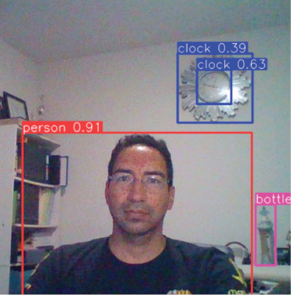

5 Results
5.1 Faster R-CNN
We used the Faster R-CNN model from TensorFlow Hub (Inception-ResNet-V2). According to the authors [1], Inception-ResNet-V2 is a deep convolutional neural network architecture introduced as part of the Inception family.
The Faster R-CNN results can be seen in images 1-4. In the first image, the model was fairly accurate in identifying individual chairs and a couple of the tables.

In the second image, Faster R-CNN correctly identified all beetles.

In the third image the model was able to distinguish different types of phones.

In the fourth image there seemed to be some confusion in the distinction between birds and animals in general.

5.2 Mask R-CNN
Images 5-7 are the results from the Mask R-CNN model that was trained from the COCO dataset. Based on the results this model seems to perform much better than the Faster R-CNN model.
In image five, Mask R-CNN very accurately detected the giraffe and two zebras.

In image six, the model was able to clearly detect the objects with a high mean average precision.

Image seven comes from a video that was fed to the Mask R-CNN model. In this frame, the model did have some trouble identifying all the objects.

5.3 YOLOv8
The last model used in our analysis was YOLOv8. This model also seemed to perform better than the Faster R-CNN model. Our YOLOv8 small (YOLOv8s) model was trained on a custom dataset that consisted of tanks and was subsequently tested on test photos of tanks. Images 8-10 show the results of the YOLOv8s model. The model accurately identified all of the tanks.


